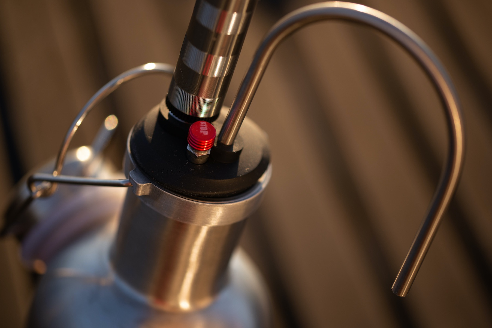
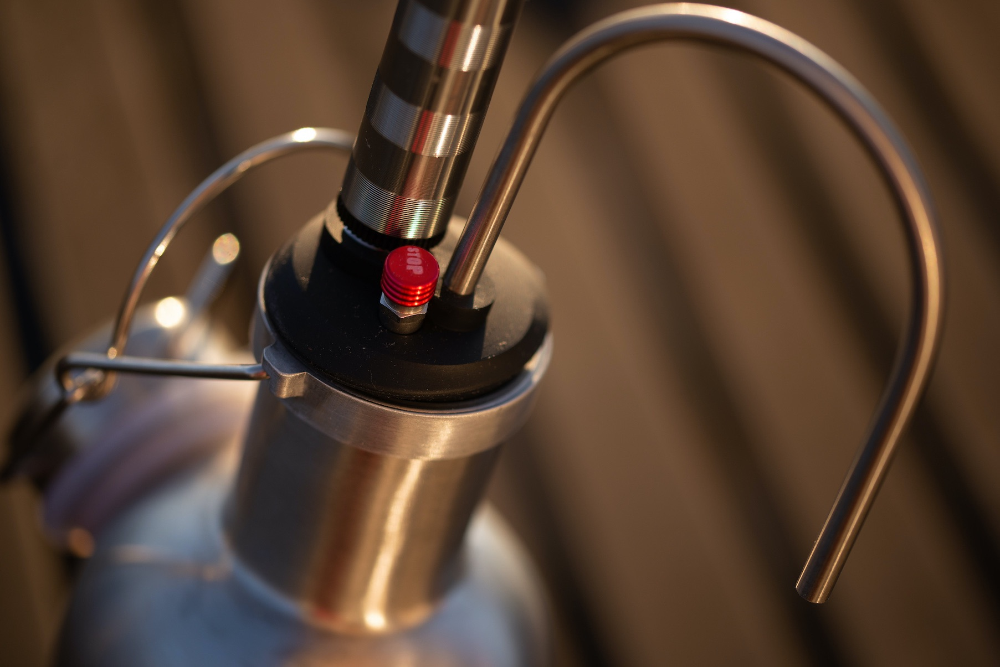

BOMBA UNIVERSAL PARA CERVEZA
Esta es la bomba más versátil y minimalista para cerveza de barril portable. El diseño exclusivo del tapón hace que la bomba sea compatible con más del 90% de los growlers, botellones o barriles convencionales del mercado.